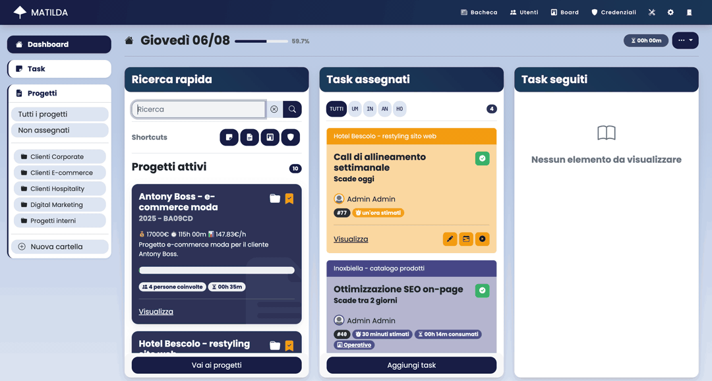
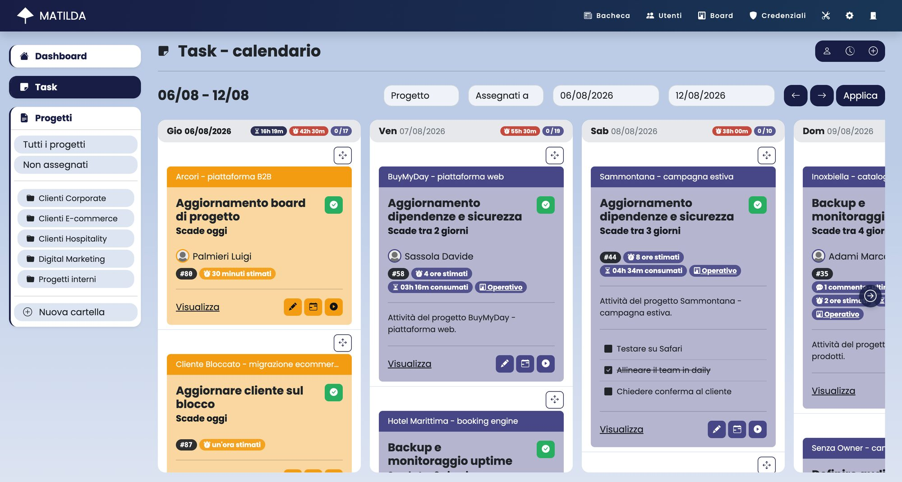
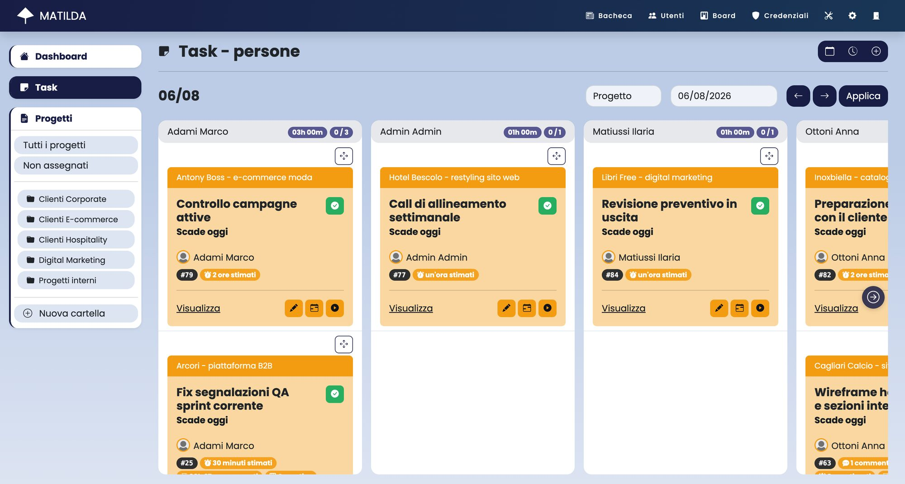
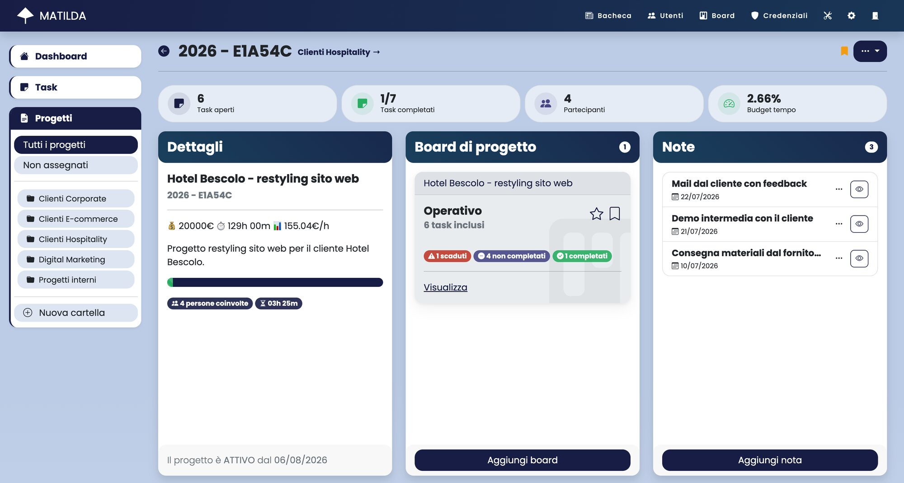
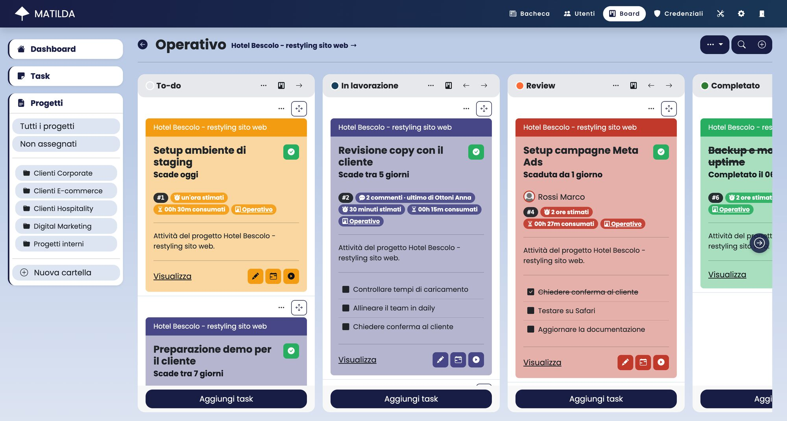
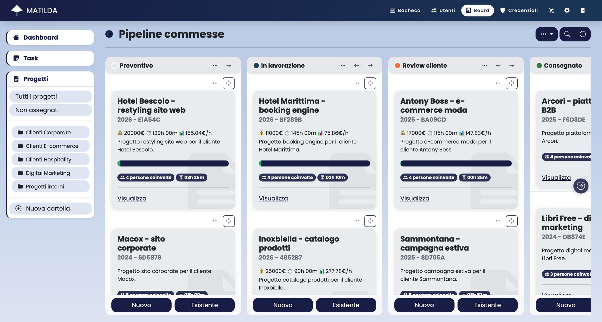

Task, progetti, board kanban e processi aziendali in un'unica applicazione web. Senza canoni per utente, sui tuoi server.

Matilda unisce pianificazione, esecuzione e controllo: niente più fogli di calcolo, tool scollegati e informazioni sparse.
Trascina le attività tra i giorni della settimana e tieni sotto controllo ore stimate e consumate per ogni giornata.

La vista per persone mostra chi sta facendo cosa, giorno per giorno: riassegna le attività con un trascinamento e bilancia il carico del team.

Budget economico e orario, note condivisibili con il cliente, allegati, partecipanti e board operative: tutta la commessa in una pagina.
Monitoraggio di costi e ore in tempo reale
Documentazione condivisibile con i clienti
Ruoli e responsabilità per ogni membro
File e documenti centralizzati e versionati

Board operative dentro ai progetti e board aziendali per la pipeline delle commesse. Crea modelli standard e automazioni sugli stati.

Segui ogni commessa dal preventivo alla consegna con budget, ore e persone coinvolte sempre visibili.

Attiva solo ciò che ti serve: ogni modulo è integrato con task e progetti e rispetta i permessi degli utenti.
Password e accessi aziendali crittografati, con contenuti offuscati a schermo e permessi dedicati.
Report sui rischi di progetto, rendicontazione del tempo e monitoraggio dei progetti fermi.
Comunicazioni e annunci aziendali con tag e ricerca, visibili a tutto il team.
Organizza progetti e credenziali in cartelle per cliente, area o reparto.
Policy granulari per ogni funzionalità: ognuno vede e modifica solo ciò che deve.
Interroga progetti, task e note in linguaggio naturale, sempre nel rispetto dei permessi utente.
Notifiche dove lavora il team e API aperte per collegare i tuoi servizi.
API JSON documentate con OpenAPI e protette da API key personali: leggi e aggiorna task, progetti e commenti.
Aggiornamenti su assegnazioni, commenti e scadenze via email e notifiche in-app.
Canali di progetto creati in automatico, notifiche e slash command per cercare note e allegati.
Matilda è open source e si installa in pochi minuti con Docker Compose. Nessun costo per utente, nessun vendor lock-in: il codice è tuo quanto i tuoi dati.
# installa Matilda con Docker
git clone https://github.com/Matilda-org/matilda.git
cd matilda
cp docker-compose.example.yml docker-compose.yml
docker compose build
docker compose run matilda bin/rails db:migrate
docker compose upRichiedi una demo personalizzata o installa Matilda sui tuoi server: è gratis, open source e pronta in pochi minuti.